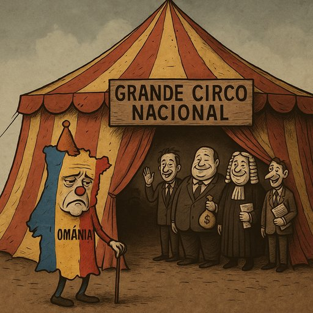

Publicado em 2025-05-31 14:32:30
Portugal não é um país.
É um palco mal iluminado onde se representa, dia após dia, a mesma peça medíocre:
“A Farsa da República dos Tachos.”
No papel principal, temos as nulidades — políticos de carreira que nunca trabalharam fora dos corredores do poder,
especialistas em prometer tudo e cumprir o que dá mais votos ou mais comissões.
Rostos plastificados, ideias recicladas e uma coragem que só aparece para cortar nos fracos.
A rodeá-los, as elites — uma casta de doutores de gravata e alma vendida, que gira entre ministérios, consultoras e bancos falidos.
Mudam de cargo como quem muda de fato, mas o cheiro é sempre o mesmo: interesse próprio e nojo público.
No camarote VIP, os empresários de ocasião.
Não produzem, não inovam, não exportam. Vivem à mama, à conta do Estado e dos amigos no poder.
Ganhadores crónicos de concursos públicos onde já sabem o resultado antes sequer de se inscreverem.
E no fosso da orquestra, o jornalismo.
Já não toca melodias de denúncia.
Toca à ordem, ao ritmo dos patrocínios e dos grupos económicos que detêm a verdade como quem detém ações numa bolsa viciada.
Os partidos políticos?
São franquias de poder, máquinas de empregar amigos, distribuir benesses e garantir que nada muda,
porque a mudança assusta — e eles têm medo de perder o poleiro.
Mas o povo... o povo assiste.
Uns resignam-se, outros emigram.
Alguns revoltam-se em silêncio.
Poucos ainda gritam. E quando gritam, são ignorados, ridicularizados, silenciados.
É este o grande circo nacional.
Sem ética, sem vergonha, sem final feliz.
Mas um dia, talvez,
os palhaços legítimos voltem ao palco —
aqueles que fazem rir com verdade,
e não os que nos fazem chorar com mentiras.
Artigo de Francisco Gonçalves in Fragmentos de Caos